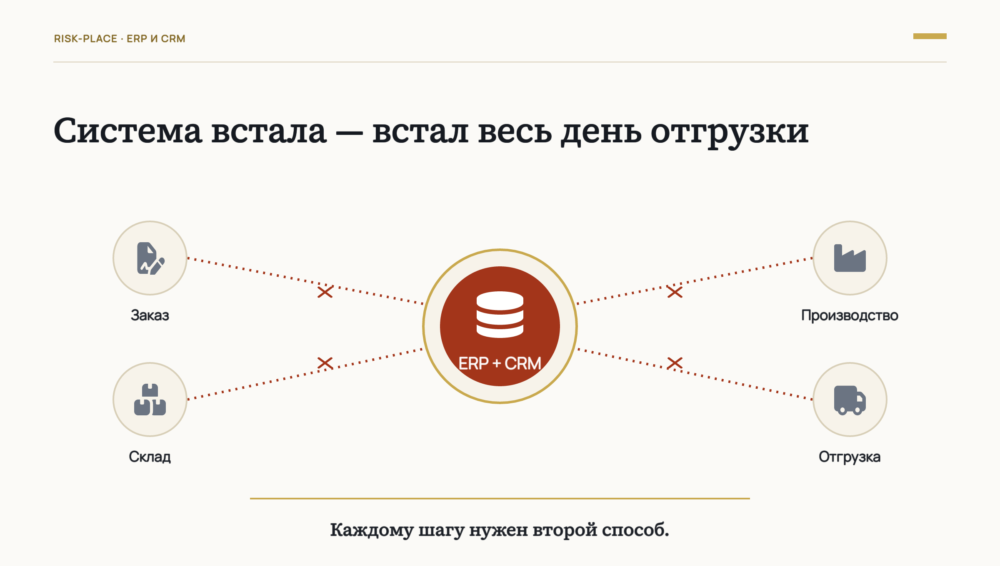

Заказ редко принадлежит одному отделу. Продажи видят клиента и обещанный срок, склад — остаток, производство — задание, а ворота — документ на выезд. Если ERP и CRM связывают все эти шаги, отказ одной базы способен остановить день целиком, даже без физических повреждений.

Посмотрите на невидимую цепочку отгрузки
Проследите один заказ по системам. Где записаны цена и особые условия? Откуда склад узнает, какую партию зарезервировать? Как производство получает спецификацию? Кто и на основании чего разрешает машине выехать?
Если на каждый вопрос ответ один — открыть ту же базу, перед вами единая точка отказа для бизнеса. Формально ERP и CRM могут быть разными продуктами, но для заказчика важен результат: без любой из них обещание и отгрузка расходятся.
Что действительно можно вести вручную
Ручной контур полезен для ограниченного списка ходовых операций. Например, принять заказ на заранее подготовленном бланке, сверить позицию с выгруженным остатком, оформить согласованный документ и сообщить клиенту новый срок.
У такого контура есть границы. Уникальную спецификацию, специальную цену или регулируемую партию нельзя безопасно восстановить по памяти. Их данные и правила нужно хранить отдельно, с ограниченным доступом и понятным порядком использования.
- Выгружайте только необходимый набор позиций и обновляйте его по расписанию.
- Укажите, кто вправе обещать срок и выпускать товар без системы.
- Заранее определите максимальный объем ручной работы на один день.
Второй способ появляется до атаки
Бланк в ящике стола еще не образует рабочий процесс. Команда должна знать, где лежит свежая выгрузка, какой документ действует, куда записывать каждую операцию и как передать смену. Иначе ручной день быстро превращается в набор несовместимых записей.
Проведите короткую репетицию: один заказ, одна позиция со склада, одна отгрузка и одно письмо клиенту. Засеките время и отметьте места, где пришлось звонить за разрешением или искать данные. Эти места и есть работа по укреплению второго контура.
Возвращение к системе начинается со сверки
После восстановления базы нельзя просто продолжить с привычного места. Все ручные заказы, движения по складу и отгрузки нужно сопоставить с записями в системе. Только после сверки документов и физических действий база снова становится главным источником для рабочего дня.
На проверке готовности к шифровальщику эта цепочка проходится по шагам: от доступности выгрузки до права на отгрузку и порядка сверки после восстановления.
Частые вопросы
Копия помогает восстановить данные, но до восстановления компании нужен второй способ принимать заказы и оформлять допустимые отгрузки.
Тот, который поддерживает ближайшую отгрузку и использует заранее подготовленные данные. Обычно это ограниченный прием заказа и выпуск ходовых позиций.
Да, если для выполнения заказа нужны обе системы и отказ любой из них останавливает обещание клиенту или выезд машины.
Готова ли команда к первому часу кризиса
Планы проверяются не чтением, а сценарием. Диагностика покажет пробелы, корпоративный формат отрабатывает их с вашей командой на ваших процессах.